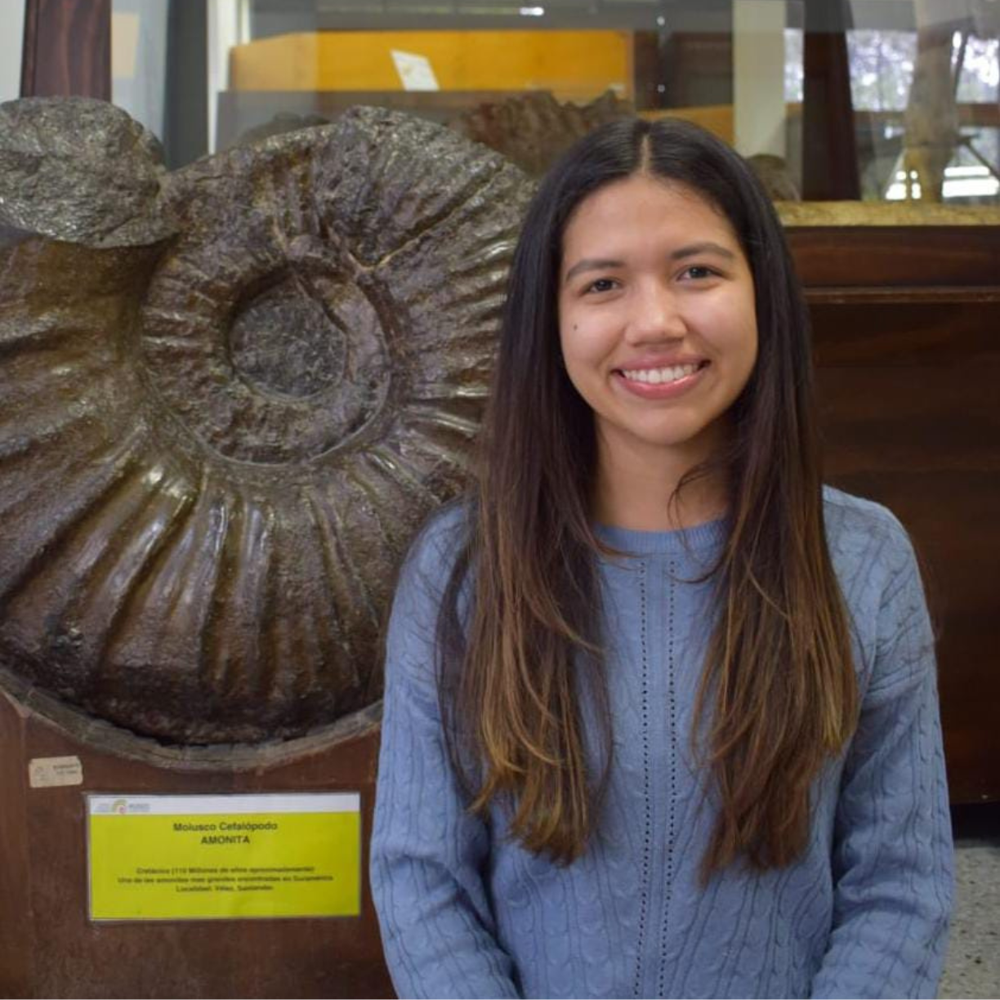

Líder

Daniela Caicedo
Perfil personal
Geóloga graduada de la Universidad de Pamplona, y actualmente me desempeño como líder de proyectos. Tengo una sólida ética de trabajo, basada en la honestidad, responsabilidad e integridad, con un fuerte compromiso hacia las causas sociales y el trabajo en equipo.
Responsabilidad
Como líder de proyectos, me encargo de coordinar, supervisar y garantizar el cumplimiento de los objetivos, asegurando una adecuada gestión de los recursos y el tiempo, y promoviendo un ambiente de colaboración y respeto mutuo.
Perfil Profesional
Mi experiencia se enfoca en actividades de cartografía geológica, levantamientos estratigráficos, análisis petrográficos y evaluación de proyectos en los sectores de hidrocarburos, infraestructura, energía y agroquímicos. Aseguro el cumplimiento de la normativa ambiental y la gestión de riesgos, además de manejar sistemas de información geográfica y herramientas ofimáticas con fluidez.
Habilidades y Competencias
Mis competencias incluyen liderazgo, toma de decisiones, planificación estratégica, trabajo en equipo y habilidades avanzadas en análisis geoespacial. Soy resolutiva, proactiva y orientada al logro de objetivos.